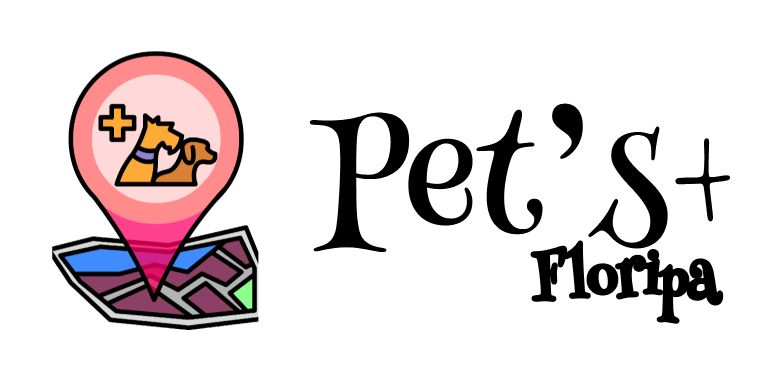

Dificuldades para encontrar clínicas veterinárias e Pet’s Shops de confiança e especializadas no seu animal de estimação exótico?
Podemos te ajudar a aumentar seus cuidados e segurança com seus pets sem muitas preocupações!
CONHEÇA MAIS DOS NOSSOS BENEFÍCIOS

O Pet’s+ Floripa é um app de cuidados com animais para sua maior segurança: Ele pode te ajudar a agendar consultas veterinárias, encontrar hospitais veterinários 24h, acompanhar o histórico médico do seu animal, encontrar pet shops e hotéis que aceitam animais de estimação.